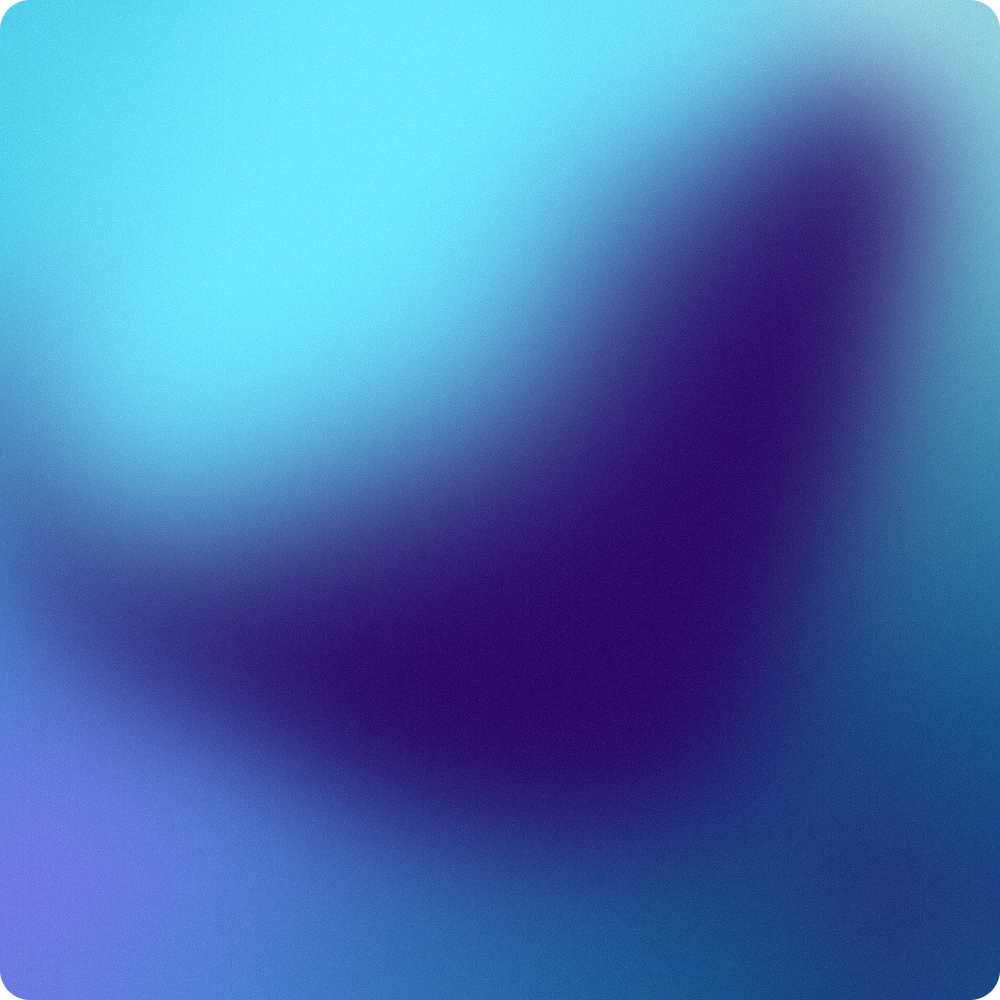

Colour authority
Protected 1000 × 1000 PNG. Never shipped as a routine website asset.
 MEZ
MEZEXP 01 · PRODUCT DISC
One chassis · five approved cores
A hard circle. White Wings. Static by default. One live core only when the composition earns it.
00 Material truth
The source master and static twin are exact-source-derived. The living renderer is a parametric approximation. They perform different jobs and are labelled honestly.

Protected 1000 × 1000 PNG. Never shipped as a routine website asset.
Source-derived WebP. Required for repetition, export, reduced motion and failure.
The live example above is the only animated mount on this page.
01 Geometry contract
The disc is the compact product object, not a decorative gradient container. Its silhouette and mark placement do not respond to hover or product.
02 Scale bands
Below 48 px, the core is only a colour indicator and must remain paired with a product name. From 48 px upward, the white Wings are required.
Static colour indicator. Not a complete lockup.
Navigation, selectors and dense product references.
Default product recognition and card use.
Static, or live only when this is the focal core.
One focal object. Composition may crop the circle.
03 Five products
Product assignments and literal names are already locked. The disc introduces no new colour. In a family, every core is the same size and every instance is static.
AI Operating System
Business context system
Advertising operating system
Software-work operating system
Organic content operating system
04 One live
The hero core above spends the page’s one motion allowance. Every repeated core stays exact and still. Hover may change internal field speed only; the object never moves.
Website feature or reveal, after consumer approval.
Exact static twins. No competition and no renderer cost.
05 Surface proof
The core requires no special theatre. It sits directly on the approved surface; the surrounding composition owns spacing and card geometry.
06 Failure proof
Reduced motion, WebGL failure and disabled runtime all resolve to the exact static twin without changing size, Wings or product naming.
07 Channel allocation
Animation is a website attention decision, never a requirement for recognition.
Approved · H-EXP-01-DISC-PROOF
Olli approved disc-contract-01. This authority locks the disc only; sphere, card, pill, stack, homepage, Figma library and production consumers remain separate gates.